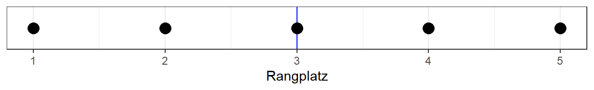
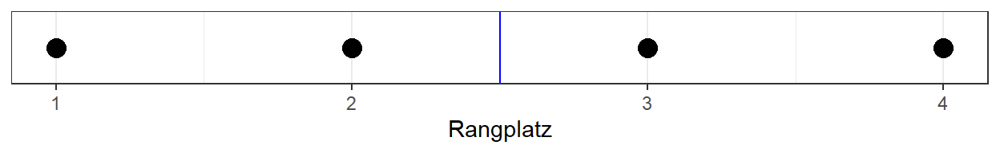
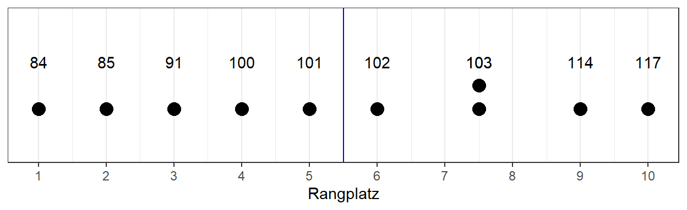
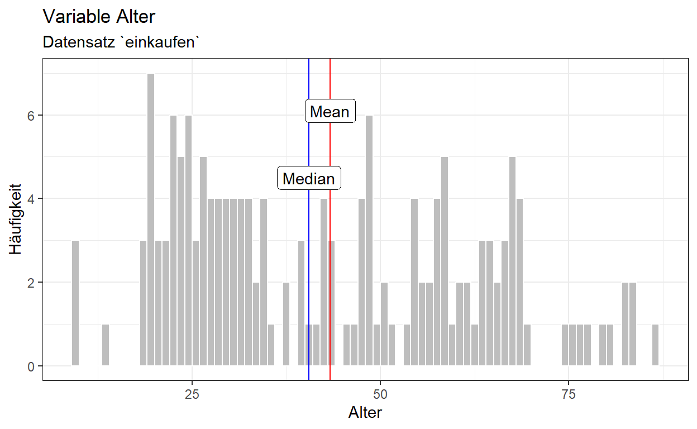
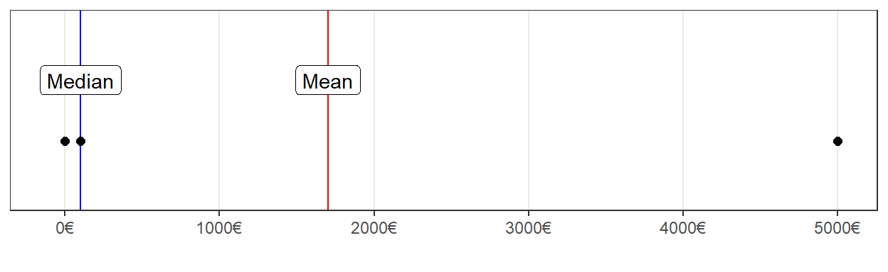

Inhalt
In diesem Tutorial wird dein Wissen zu den Maßen der zentralen Tendenz aufgefrischt sowie deren Umsetzung in R besprochen.
Am Ende kannst du:
- Den Mittelwert mit
mean()berechnen - Den Median mit
median()berechnen - Den Modus mit
table()herausfinden - Verstehen, wann welches Maß angewandt wird
Zentrale Tendenzen
Zur Orientierung, wo wir uns im Prozess befinden: Der Datensatz ist nun erhoben und in R eingepflegt, die Analyse kann beginnen!
{kind=link}
Wenn du einer anderen Person jetzt von deinen Daten erzählen möchtest, könntest du natürlich jeden einzelnen Datenpunkt aufzählen. Doch seien wir ehrlich: das dauert lang und das will auch kein Mensch hören. Dann stellt sich unweigerlich die Frage: Wie kann ich in möglichst kompakter Form, am besten in einer Zahl, über meine Daten sprechen und dabei möglichst genau sein?
Die Antwort: Es kommt darauf an!
Und worauf? Ganz genau, auf das Skalenniveau. Das ist im übrigend DER Grund, warum wir uns das ganze überhaupt erst so umfassend und genau angeschaut haben!
Was kennzeichnet eine gute Zusammenfassung?
Woher weiß ich, unabhängig von der Skala, dass ich eine gute Zahl gewählt habe, um meine Daten zu beschreiben?
Daten sind bestmöglich beschrieben, wenn die zusammenfassende Zahl den kleinstmöglichen Fehlerwert aufweist!
Das gehen wir jetzt gemeinsam Skala für Skala durch.
Kardinalskala
Eben haben wir festgelegt:
Die zusammenfassende Zahl sollte den Fehler minimieren.
Als Fehler lässt sich hier gut die summierte Abweichung von der zusammenfassenden Zahl beschreiben. Wir möchten diese Abweichung möglichst nahe bei 0 haben.
Unten siehst du eine interaktive Grafik, die das Konzept der Abweichung von der zusammenfassenden Zahl visualisieren soll.
Nutze den Slider, um eine Zahl zu finden, wo sich die positiven und negativen Abweichungen ausbalancieren!
Klasse! Du hast eben durch Ausprobieren diejenige Zahl gefunden,
welche den wenigsten Fehler hat.
Da es zu aufwändig wäre immer Ausprobieren zu müssen, haben sich schlaue
Mathematiker*innen hingesetzt und das ganze auf Formelebene gelöst. Sie
fanden heraus, dass die genaueste Zahl diejenige ist, die herauskommt,
wenn du alle vorhandenen summierst und durch ihre Anzahl teilst. Also
kurz: das arithmetische Mittel oder der Mittelwert, auf englisch:
mean.
\[ {\large \bar{x} = \frac{\sum_{i=1}^{n}{x_i}}{n}} \]
Die Funktion für den Mittelwert in R ist mean().
Finde den Mittelwert der Variable iq heraus!
mean(iq)iq <- c(100, 103, 114, 85, 101, 91, 84, 103, 117, 102)
mean()Mittelwert einer Tabellenspalte
Nun wenden wir das auf eine Tabellenspalte an. Als Daten dient uns
der Datensatz rtutorials::einkaufen, welcher von
Studierenden 2022 in ihrer Felderhebung erstellt wurde. Das Ziel ist,
den Mittelwert der Spalte alter zu berechnen.
So sieht der Datensatz einkaufen aus (reduziert auf die
Spalten: Alter, Verkehrsmittel, Weg, Frequenz):
Berechne den Mittelwert der Spalte alter im Data Frame
einkaufen!
Beachte, dass hier entgegen der Konvention die Variablennamen mit Großbuchstaben anfangen! Möchtest du diese Variablen also verwenden, denk daran Sie ebenfalls mit Großbuchstaben zu schreiben.
mean()mean(einkaufen$alter) Huch? Wieso kommt da NA raus?
NA heißt Not Available und ist in R ein
spezieller Platzhalter für fehlende Werte! NA sagt R so
etwas wie: Vorsicht, dieser Wert könnte alles enthalten. In Berechnungen
wirkt sich NA sehr ansteckend aus, denn wenn ein Input
alles mögliche enthalten könnte, kann auch der Output alles mögliche
enthalten und ist dementsprechend auch NA. Daraus schließen
wir, dass die Spalte alter NAs enthält, was
bei realen Daten sehr oft der Fall ist. Möglicherweise wollten einige
Personen einfach nicht auf die Frage antworten, wie alt sie sind -
verständlich. Dann wird NA eingetragen.
R zwingt uns, explizit zu sein damit, wie wir mit NAs
umgehen. Es gibt immer eine einfache Lösung, nämlich NAs
ausschließen und dann die Berechnung durchführen, aber wir müssen erst
spezifisch sagen, dass wir das tun wollen und es passiert nicht
automatisch.
Um NAs zu entfernen, geben wir das Argument
na.rm = TRUE an die Funktion mean()!
na.rm steht für NA remove.
Verändere die Berechnung so, dass NAs entfernt
werden!
mean(einkaufen$alter)mean(einkaufen$alter, na.rm = TRUE)Juhu! Es hat funktioniert!
Die Summe der Abweichungen vom Mittelwert ist immer 0
Nun beweisen wir quasi rückwärts, dass das arithmetische Mittel immer der Wert ist, wo sich positive und negative Abweichungen gegenseitig aufheben. Dafür gehen wir zurück zu unserem einfachen IQ-Beispiel. Es gilt:
sum(iq - mean(iq)) == 0Was dieser Code ausgesprochen bedeutet:
- Berechne die Differenz jedes IQ-Werts vom Mittelwert.
- Summiere alle Differenzen
- Prüfe, ob das Ergebnis Null ist
Wende diese Prüfung auf den Vektor iq an, indem du den
Codeblock ausführst! Versuche die einzelnen Schritte
nachzuvollziehen.
# 1. Berechne Differenz jedes Werts vom Mittelwert
iq - mean(iq)
# 2. Summiere alle Differenzen
sum(iq - mean(iq))
# 3. Prüfe ob das Ergebnis Null ist
sum(iq - mean(iq)) == 0Take-Away
Halten wir fest: Der Mittelwert eines kardinalskalierten Vektors ist die einfachste und genaueste Zusammenfassung all seiner einzelnen Werte! Wie wir im nächsten Abschnitt sehen werden, ist er aber sehr empfindlich gegenüber extremen Werten und manchmal deswegen ein ungeeignetes Maß.
Ordinalskala
Doch was tun, wenn du es mit ordinalskalierten Daten zu tun hast und du sie eben nicht einfach zusammenrechnen kannst (weil die Abstände nicht gleichbedeutend sind)?
Es gibt im Grunde zwei verschiedene Ansätze
- Du ignorierst alles, was du über Skalenniveaus gelernt hast und rechnest das arithmetische Mittel trotzdem aus. Ab 5 Faktorstufen einer ordinalskalierten Skala lässt sich mathematisch zeigen, dass du sie als metrisch betrachten und entsprechende Statistiken verwenden kannst (ganz praktisches Beispiel: Schulnoten)
- Du findest eine Möglichkeit die Rangplätze zu berücksichtigen.
Ansatz 1 kannst du schon. Ansatz 2 kommt jetzt:
Das Gute an den rangskalierten Daten ist, dass du sie anhand ihrer Ausprägung in eine logische Reihenfolge bringen kannst.
Beispiel
Wir tun jetzt mal so, als wäre der IQ Vektor aus dem vorherigen
Abschnitt ordinalskaliert. Als Tabelle in der richtigen Reihenfolge
würde das so aussehen. (R übernimmt das mit der Funktion
sort() oder table()).
| IQ Werte sortiert |
|---|
| 84 |
| 85 |
| 91 |
| 100 |
| 101 |
| 102 |
| 103 |
| 103 |
| 114 |
| 117 |
Nun werden Rangplätze vergeben. Doch: Wenn zwei Zahlen den gleichen
Wert haben, werden ihre Ränge addiert und durch 2 geteilt und beiden
zugewiesen. So dass in jedem Fall immer der letzte Eintrag genau den
gleichen Rang hat, wie es Zahlen insgesamt gibt. (Das übernimmt R mit
der Funktion rank(). Für die ganz Cleveren:
rank(sort()).)
| IQ Werte sortiert | Ränge |
|---|---|
| 84 | 1 |
| 85 | 2 |
| 91 | 3 |
| 100 | 4 |
| 101 | 5 |
| 102 | 6 |
| 103 | 7.5 |
| 103 | 7.5 |
| 114 | 9 |
| 117 | 10 |
Median berechnen
Der Median ist der Wert, wo gleich viele Werte drüber und drunter liegen. Je nachdem, ob wir eine gerade Anzahl von Werten haben, unterscheidet sich die Berechnung:
ungerade Anzahl
Bei einer ungeraden Anzahl von Werten gibt es einen, der genau in der Mitte liegt. Der ist dann auch der Median. Sehr praktisch.

gerade Anzahl
Das ist bei einer geraden Anzahl nicht der Fall, und der Median ist dann der Mittelwert beider Werte die in der Mitte sind.

Anwendung auf das IQ-Beispiel
Auch im IQ-Beispiel haben wir 10 Werte, also eine gerade Anzahl.
Bei einer geraden Anzahl von Rängen (wie hier), wo es zwei Werte in
der Mitte gibt, werden die beiden Werte addiert und durch 2
geteilt.
Hier: \(Median = \frac{101 + 102}{2} =
101.5\).

Die Grafik zeigt sehr gut, dass der Median nicht die Werte selbst interpretiert, sondern lediglich ihre Rangplätze! Die Abstände zwischen den einzelnen IQ-Werten sind zwar eigentlich unterschiedlich groß, aber da wir ordinales Skalenniveau haben, fällt diese Information weg.
Die Funktion in R für die Berechnung des Medians ist:
median()
Finde mittels der median()-Funktion den Median für die
IQ-Variable heraus!
median(iq)iqKlasse! Das ist genau das Gleiche, was wir auch per Hand berechnet haben.
Median einer Tabellenspalte berechnen
Berechne dieses Mal den Median der Spalte
einkaufen$alter!
- Verwende auch hier das Argument
na.rm = TRUE, umNAs zu entfernen.
median()median(einkaufen$alter)Vergleich arithmetisches Mittel und Median
Eben haben wir herausgefunden, dass der Median des Alters im
Datensatz einkaufen 40.5 beträgt, und das arithmetische
Mittel ca. 43. Diese beiden Werte liegen verhältnismäßig nah
beieinander, siehe Grafik:

Es ist in manchen Fällen sinnvoll, sich beide Werte (Mittelwert und Median) anzuschauen und zu vergleichen. Wenn sie nah beieinander liegen ist es super, wenn nicht, ist es essentiell sich nochmal die Werte anzuschauen und sich über Außreißerwerte Gedanken zu machen und wie mit ihnen umgegangen werden soll (üblicherweise eine der drei Alternativen: rausschmeißen und Mittelwert berechnen, Ausreißer drin behalten und Mittelwert berechnen, Median berechnen)
Warum Median, wenn ich doch metrische Daten habe?
Er ist robuster und in manchen Fällen sogar inhaltlich aussagekräftiger. Ein gutes Beispiel wäre: Eine Person hat 0€ auf dem Konto, eine andere 100€ und die dritte 5 000€. Der Mittelwert würde jetzt sagen, dass die Menschen im Durchschnitt 1700€ auf dem Konto haben. Das bildet die Realität nicht wirklich ab. Der Median hingegen würde 100€ sagen, was vom Verständnis her besser passt.

Eine schnelle Übersicht bietet dir die Funktion
summary(). Hier werden dir Mittelwert (mean), Median,
Reichweite (kleinster Wert und größter Wert) sowie der
Interquartilsabstand (nächster Block, Tutorial Dispersionsmaße)
angezeigt.
Wende die Funktion summary() auf den Vektor iq an und
mach dich mit dem Ergebnis vertraut!
summary(iq)iqZusammenfassend lässt sich also sagen: Der Median ist eine gute Zusammenfassung für ordinalskalierte und in manchen Fällen (zB. viele/ krasse Ausreißer) auch intervallskalierte Daten.
Nominalskala
Hier gibt es keine logische Reihenfolge. Insofern fallen Mittelwert und Median raus. Um möglichst wenige Fehler in der Vorhersage zu machen, ist es logischerweise sinnvoll, die Kategorie anzugeben, welche die meisten Werte haben. Das wird dann Modus genannt.
Gegeben sei die Lieblingsfarbe von 10 anderen Studis:
c("pink", "pink", "blau", "blau", "pink", "blau", "blau", "pink", "lila", "pink")Da es eine nominale Variable mit wiederkehrenden Kategorien ist,
sollten wir sie als factor() speichern.
Um heraus zu finden, welche Gruppe am größten ist, könntest du zählen
und eine Strichliste machen. ODER du lässt ganz smooth R für dich
arbeiten. Hierfür brauchst du wieder die Funktion
summary().
- Erstelle einen neuen Vektor namens
farben, der ein Faktorfactor()ist und die oben angegebenen Werte enthält! - Lass dir eine Zusammenfassung der Werte mit der
summary()-Funktion ausgeben!
farben <- factor(c("pink", "pink", "blau", "blau", "pink", "blau", "blau", "pink", "lila", "pink"))
summary(farben)Doch warte mal - oben hat die gleiche Funktion doch auch einen
numerischen Vektor bearbeitet und jetzt kann sie auch mit einem
factor umgehen? Und das Ergebnis sieht auch ganz anders
aus.
JA!
Deswegen war das Vektoren-Tutorial auch so wichtig! R erkennt, dass
es eine andere Objektklasse ist und behandelt die Daten dementsprechend
anders. Wenn du möchtest, kannst du zur Überprüfung einmal den
farben-Vektor ohne ihn in einen Faktor zu verwandeln in die
summary()-Funktion stecken:
farben <- c("pink", "pink", "blau", "blau", "pink", "blau", "blau", "pink", "lila", "pink")
summary(farben)
table(farben)Es wird nur grundsätzliche Information ausgegeben, z.B. dass
farben die Klasse character hat.
Die Funktion table() kann exakt das gleiche, nur dass
ihr egal ist, welche Objektklasse der Vektor hat, die funktioniert
immer.
Zurück zum Modus:
Take-Away:
Lange Rede, kurzer Sinn: Der Modus ist die am häufigsten vorkommende Kategorie bei nominalen Daten und damit die beste Möglichkeit, diese zusammen zu fassen.
Abschlussquizz
Learnings
So hast du heute abgeschnitten:
Zusammenfassung
In diesem Tutorial hast du folgende Funktionen kennengelernt:
| Funktion | Inhalt |
|---|---|
mean() |
Berechnet den Mittelwert. |
median() |
Berechnet den Median. |
sort() |
Sortiert einen Zahlenvektor. |
rank() |
Gibt die Rangplätze eines Zahlenvektors aus. |
summary() |
Gibt die zentrale Tendenz je nach Objektklasse aus. |
table() |
Fasst Daten je nach Objektklasse zusammen. |
sum() |
Summiert die Elemente eines Vektors. |
Credit
Dieses Tutorial wurde von Gesa Graf verfasst, von Lukas Bruelheide erweitert und von Marie Klosterkamp reviewt.